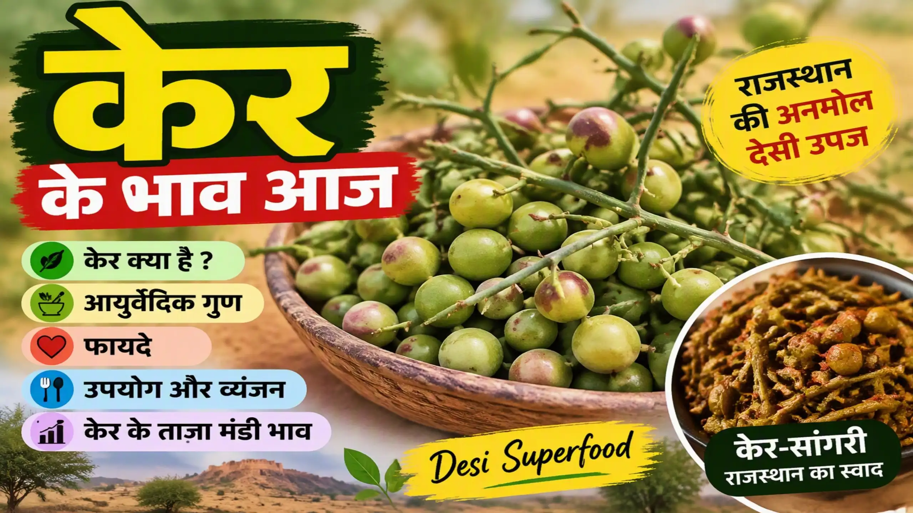
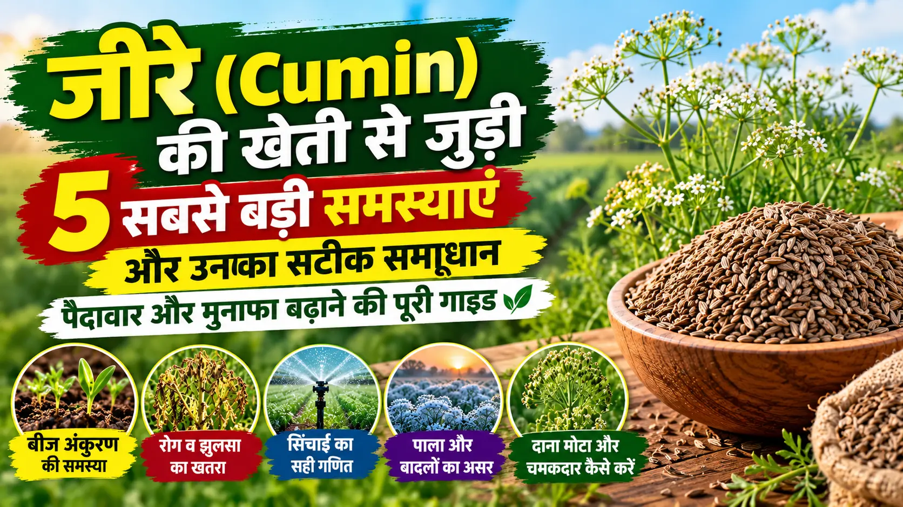
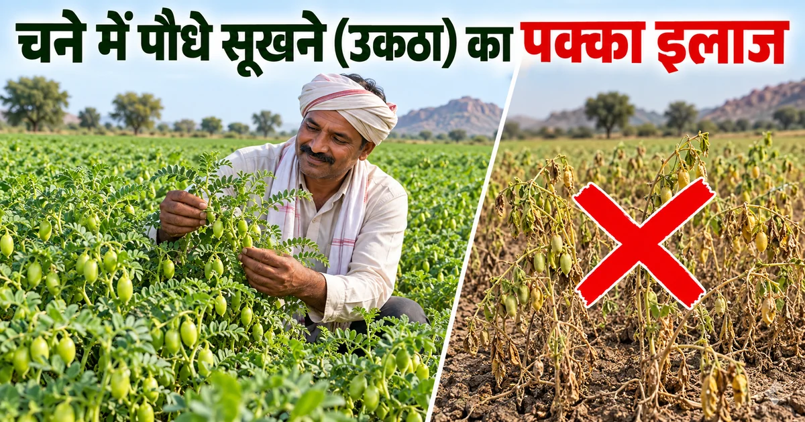
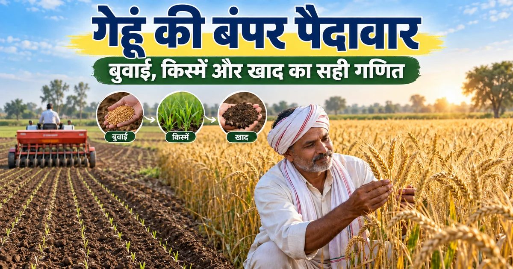

 फसल गाइड केर और केर के भाव: आयुर्वेदिक गुण, फायदे, उपयोग और केर-सांगरी केर के भाव के साथ जानें केर क्या है, इसके आयुर्वेदिक गुण, फायदे, उपयोग, केर-सांगरी, अचार, पोषक तत्व और वैज्ञानिक शोध की पूरी जानकारी। पूरी जानकारी पढ़ें →
 फसल गाइड जीरे की खेती का पूरा गणित: अंकुरण, उकठा-झुलसा से बचाव और दाना चमकाने का सीक्रेट जीरे की खेती में बीज अंकुरण का सही तरीका, उकठा-झुलसा रोग से बचाव, सिंचाई का सही समय और दाना मोटा-चमकदार बनाने की संपूर्ण वैज्ञानिक गाइड। पूरी जानकारी पढ़ें →
 फसल गाइड चने की बंपर पैदावार का सीक्रेट: बुवाई का सही समय, टॉप किस्में और 'उकठा' रोग का पक्का इलाज चने की खेती में बुवाई का सही समय, उन्नत किस्में, बीज उपचार, खाद, सिंचाई और उकठा रोग से बचाव की पूरी जानकारी। पूरी जानकारी पढ़ें →
 फसल गाइड गेहूं की बंपर पैदावार का फॉर्मूला: बुवाई का सही समय, टॉप 5 नई किस्में और खाद का गणित गेहूं की खेती में बुवाई का सही समय, DBW 327 सहित टॉप किस्में, बीज उपचार, खाद-जिंक और पहली सिंचाई की पूरी जानकारी। पूरी जानकारी पढ़ें →
फसल गाइड सरसों की बंपर पैदावार का सीक्रेट: बुवाई से कटाई तक ए टू जेड (A to Z) गाइड सरसों की खेती में खेत की तैयारी, बुवाई का सही समय, उन्नत किस्में, बीज उपचार, खाद, सिंचाई और रोग नियंत्रण की A to Z जानकारी। पूरी जानकारी पढ़ें →
किसान गाइड खेत की मिट्टी की जांच: बंपर पैदावार और मुनाफे का सबसे बड़ा राज़ मिट्टी की जांच क्यों जरूरी है, सही समय पर खेत से नमूना कैसे लें और Soil Health Card के अनुसार खाद का इस्तेमाल कैसे करें। पूरी जानकारी पढ़ें →